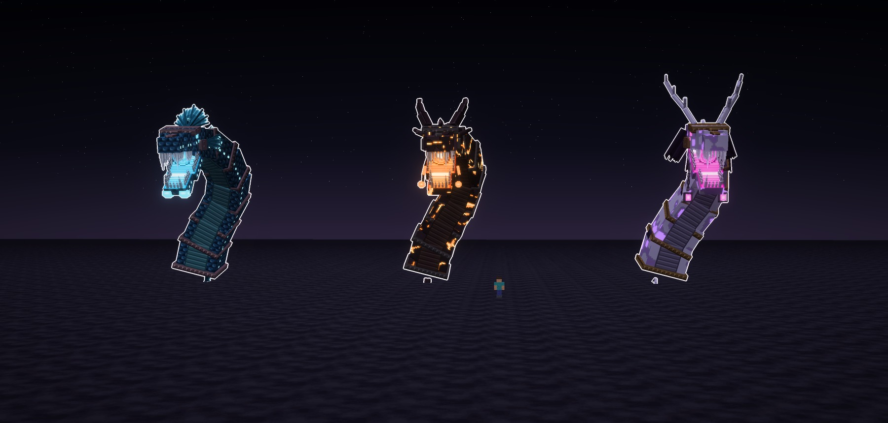
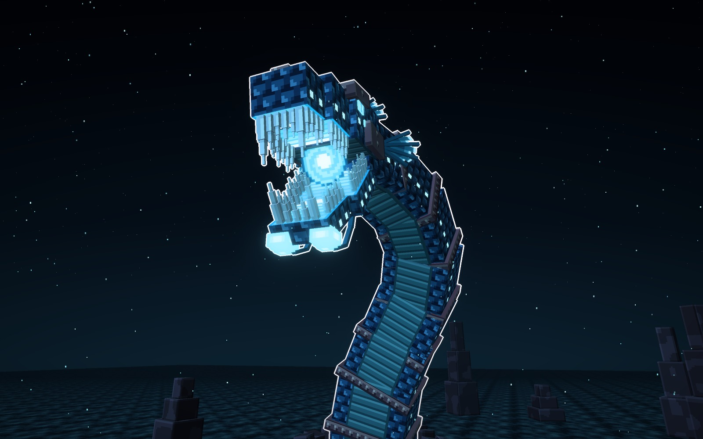
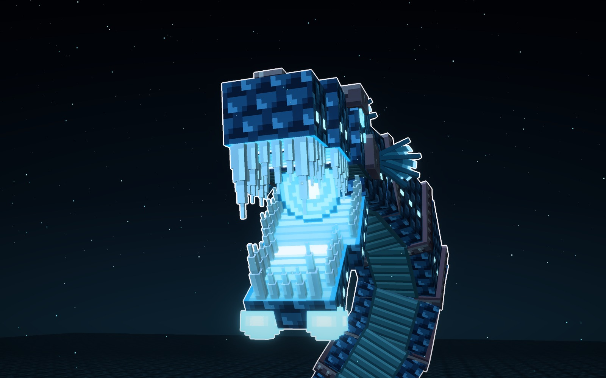
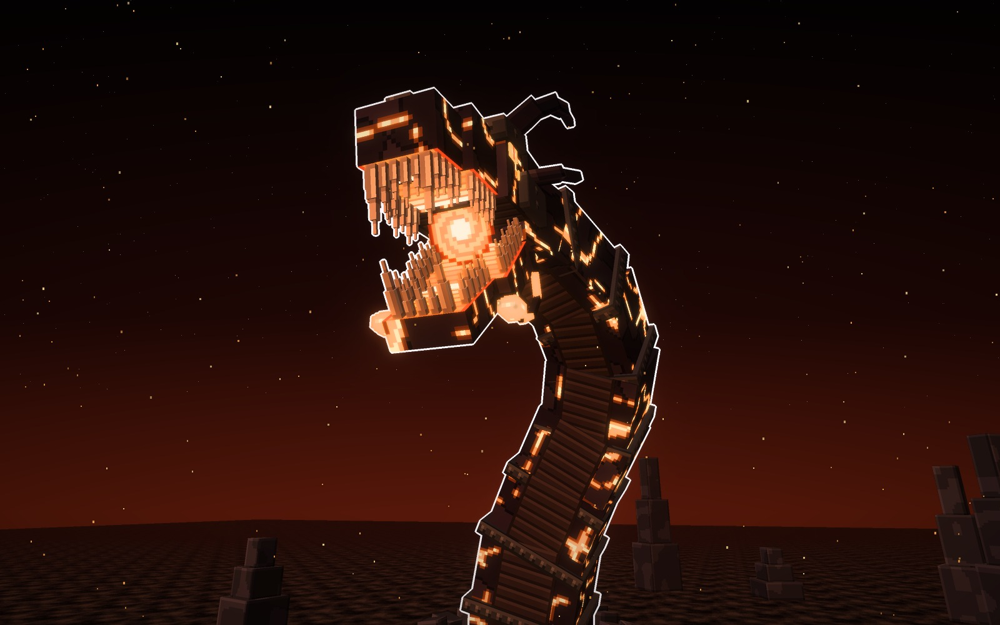
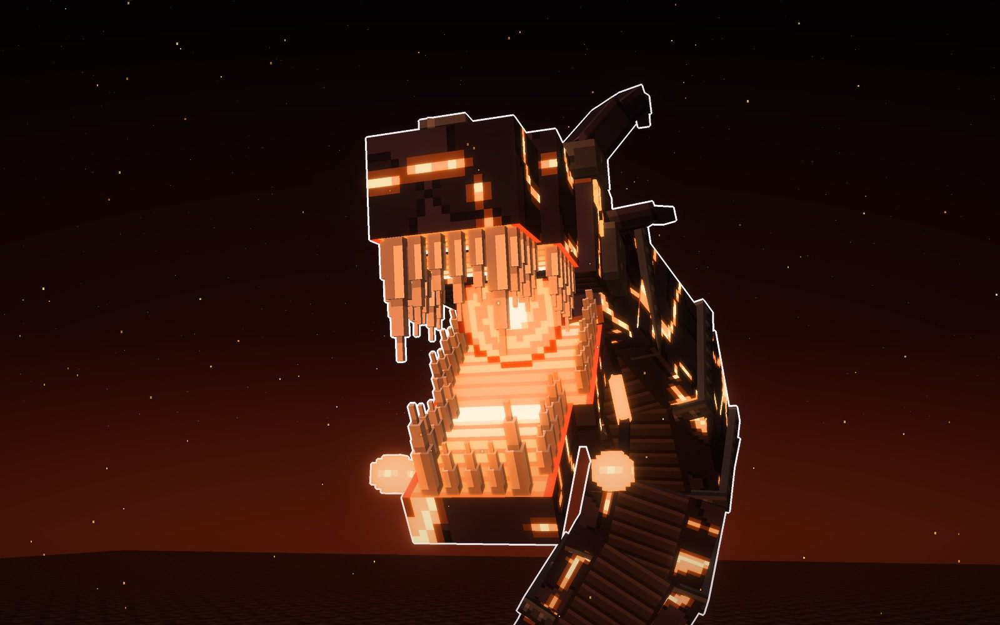
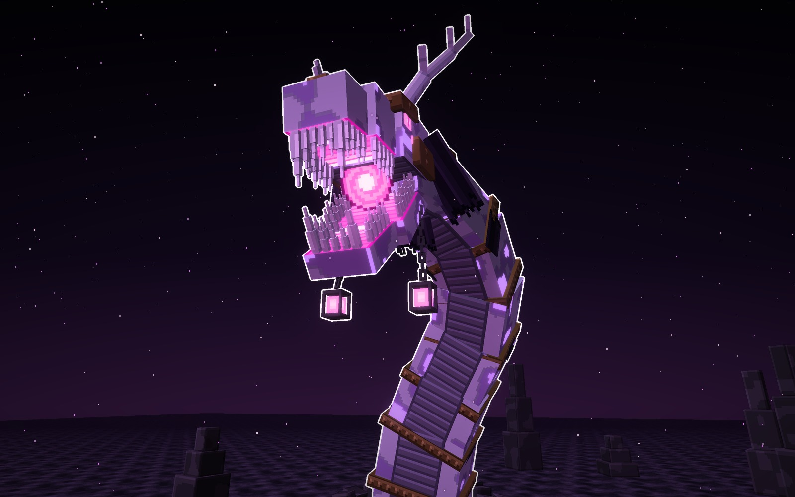
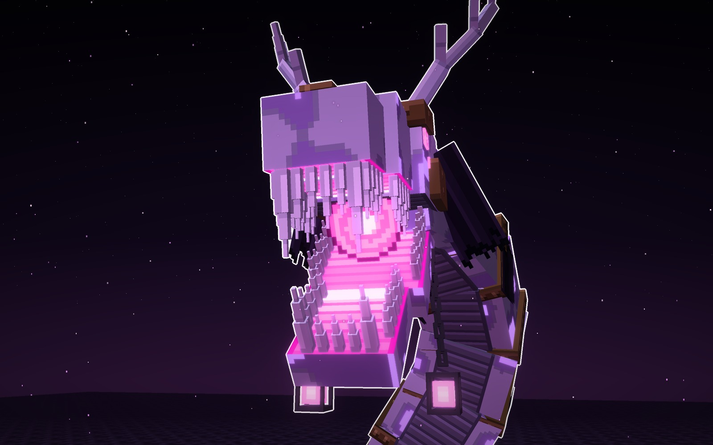
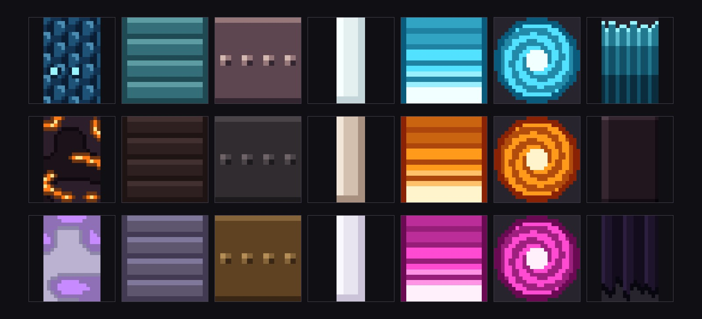

Atalaya · jefe nuevo · ficha de diseño · 12-10-2026
Simara, la Sierpe de las Simas
Una sola entidad en tres tipos, para que compares: la misma sierpe colosal que sale de una sima, con
fauces enormes y un remolino que gira en la garganta, en versión Abisal, Volcánica y Espectral.
Qué he cambiado
Texturas limpias, como Ofidia
- Nada de ruido ni motas sueltas: era lo que ensuciaba las anteriores.
- Formas dibujadas: escamas, escudos, cinturones con remaches, vetas que serpentean y manchas grandes con su borde.
- Píxel grande y paleta corta, a 8 píxeles por bloque, como un modelo de Minecraft.
Lo que comparten los tres tipos
- El mismo modelo: cuerpo de tambores ceñidos por cinturones, alzado desde la sima.
- La misma cabeza: fauces enormes con dientes en peine y colmillos delante.
- Lo nuevo: al fondo de la garganta gira un remolino, de agua, de magma o de almas.
- Cambian la piel, el neón y los adornos de la cabeza.
A · tipo abisal · neón cian
Simara Abisal
La de las profundidades. Escamas azul marino con una fila de fotóforos que brillan, aletas por todo el lomo y un
abanico de espinas con membrana en la nuca, como una corona. De la barbilla le cuelgan dos barbillones con un bulbo de luz.


Su piel y sus adornos
- Piel
- escamas en U con su brillo y una fila de fotóforos por cada costado
- Vientre
- una franja de escudos verdeazulados
- Cinturones
- de nácar oscuro, con remaches
- Lomo
- una aleta por tambor, con radios y el borde en festones que brilla
- Cabeza
- abanico de siete espinas en la nuca y dos más pequeños a los lados, como agallas
- Barbillones
- dos, con un bulbo de luz al final
Señas
- El remolino de la garganta es de agua.
- La más «de mar»; la que más se aleja de Ofidia.
escamas
vientre
cinturón
neón
En pelealos bulbos de los barbillones te atraen; si los miras, te acercas solo hacia la boca.
B · tipo volcánico · neón naranja
Simara Volcánica
La de la sima de lava. Placas de obsidiana con vetas de magma que serpentean y brillan, púas de obsidiana en el
lomo y una corona de cuernos que se echan atrás. De la quijada le cuelgan dos látigos de lava que gotean.


Su piel y sus adornos
- Piel
- obsidiana en dos tonos con vetas de magma limpias que la recorren
- Vientre
- una franja de escudos de basalto
- Cinturones
- de hierro negro, con remaches
- Lomo
- dos púas de obsidiana por tambor
- Cabeza
- dos cuernos grandes que se echan atrás, dos pequeños y púas por la frente
- Látigos
- dos, de costra y magma, con una gota encendida al final
Señas
- El remolino de la garganta es de magma.
- La más imponente de silueta, por los cuernos.
obsidiana
magma
hierro
neón
En pelealas vetas se encienden antes de escupir lava; los látigos barren el suelo alrededor de la sima.
C · tipo espectral · neón magenta
Simara Espectral
La de la cripta, y la que más se acerca a Ofidia. Vértebras de hueso con manchas de alma que brillan en violeta,
cinturones de bronce, astas de hueso y una mortaja de jirones que le cae por el cuello. De la quijada le cuelgan dos cadenas
con farolillos de almas.


Su piel y sus adornos
- Piel
- hueso lila con manchas de alma de borde limpio, como el mármol de Ofidia pero en violeta
- Vientre
- una franja de escudos de hueso oscuro
- Cinturones
- de bronce, con remaches
- Lomo
- la apófisis de cada vértebra y jirones que cuelgan a los lados
- Cabeza
- dos astas de hueso con sus puntas y una mortaja de tres jirones
- Farolillos
- dos, colgando de cadenas, con un alma encendida dentro
Señas
- El remolino de la garganta es de almas.
- La más cercana a Ofidia: cuerpo de tambores con cinturones y el violeta.
hueso
alma
bronce
neón
En pelealos farolillos liberan almas que te persiguen; si rompes uno, el remolino se debilita.
Los tres tipos, a escala
La misma sierpe en los tres tipos, con la misma luz y un jugador delante (1,8 bloques). Alzada mide unos 20
bloques, como Espinara.
Los materiales
Las texturas de cada tipo a píxel grande: la piel, el vientre, el cinturón, los dientes, el interior de las
fauces, el remolino y lo propio de cada uno. Todas dibujadas a 8 píxeles por bloque, sin ruido ni motas sueltas.

Veredicto de Juan
Le gustaron el monstruo y sus tres tipos (12-10-2026): «me gustaron este monstruo y sus variables». Es la primera ficha de una sola entidad en tres tipos, y la primera con texturas limpias como las de Ofidia: el formato a seguir.
Bocetos: materiales/generadores/sierpe_modelo.py y sierpe_escenas.py.